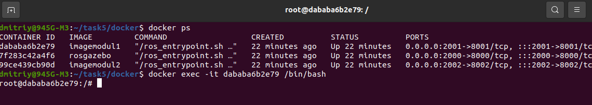
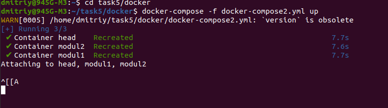
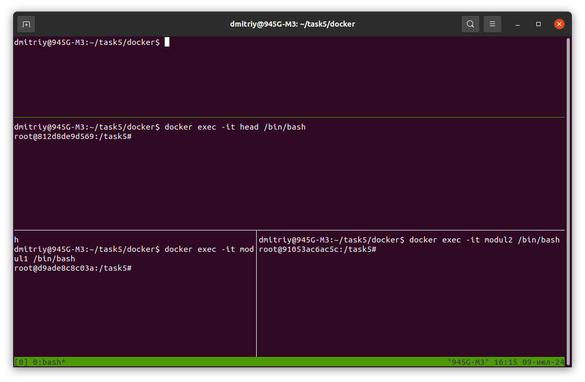
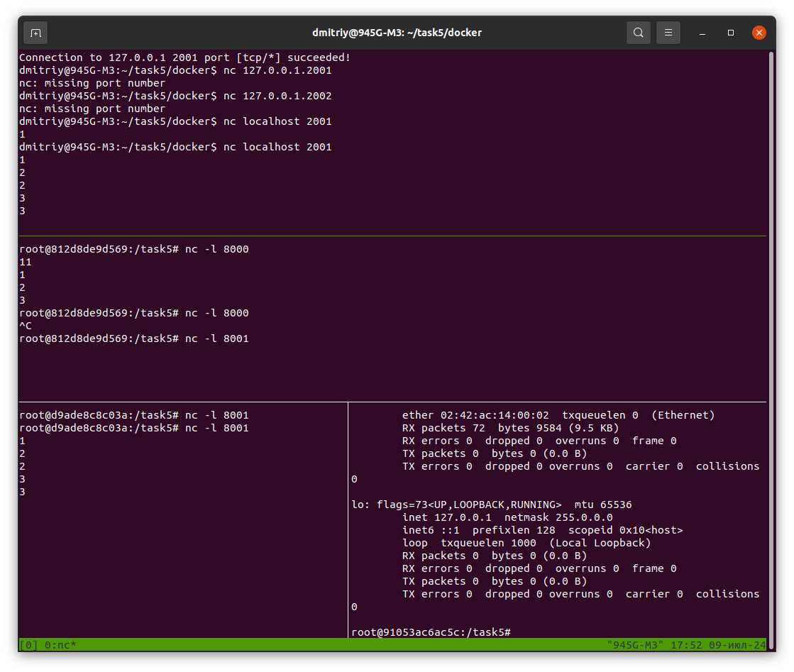
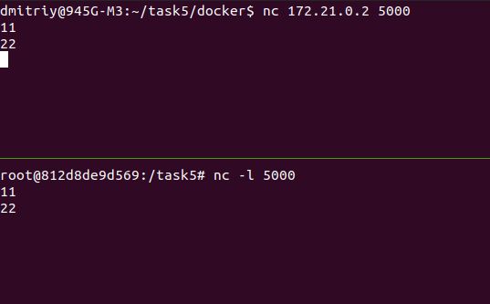
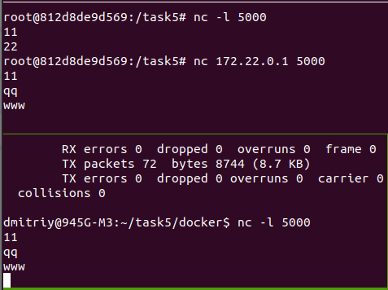
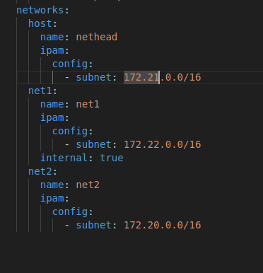

Задание по docker
Связь между хостом с Head через сеть, порт 80 на хосте с портом 8000 на Head, Modul1 подключается к Head через usb, Modul2 пускай через свой порт 8002 подсоединён к порту 8000 на Head.
Код docker-compose2.yml:
version: '4'
services:
head:
container_name: head
image: rosgazebo
networks:
- host
- net1
- net2
ports:
- 80:8000 #80 порт на хосте связан с 8000 на head
stdin_open: true # docker run -i
tty: true # docker run -t
volumes:
- $HOME/task5:/task5
command: tmux new window
modul1:
container_name: modul1
image: imagemodul1
#build:
#context: ../
#dockerfile: docker/Dockerfile1 # Path to the Dockerfile relative to the context
volumes:
- $HOME/task5:/task5
stdin_open: true # docker run -i
tty: true # docker run -t
networks:
- net1
ports:
- 80:8001 #80 порт на хосте связан с 8001 на modul1
command: tmux new window
modul2:
container_name: modul2
image: imagemodul2
volumes:
- $HOME/task5:/task5
stdin_open: true # docker run -i
tty: true # docker run -t
networks:
- net2
ports:
- 80:8002 #80 порт на хосте связан с 8002 на modul2
command: tmux new window
networks:
host:
net1:
net2:
cd task5/docker
docker build -t imagemodul1 -f Dockerfile1 . создал образ imagemodul1 для контейнера modul1
docker build -t imagemodul2 -f Dockerfile2 . - создал образ imagemodul2 для контейнера modul2
образ rosgazebo был создан в предыдущем задании
docker-compose -f docker-compose2.yml up
Error response from daemon: driver failed programming external connectivity on endpoint head
(fcc81b859f6ada4a73db17f5791730d173c53a899874eafdc5ccae070acd9da4): Bind for 0.0.0.0:80 failed: port is already allocated
Есть предположение, что какой-то контейнер уже использует порт 80.
docker rm $(docker ps -a -q) - удалил все контейнеры.
Повторил:
docker-compose -f docker-compose2.yml up

Не помогло. Теперь идея, что 80 порт должен связан с одним контейнером. Оставим в контейнере head, но тогда
как в других контейнерах? Поменял, ошибка повторилась.
Видимо порт 80 занят на хосте, поменял его на 2000 (head), 2001 (modul1), 2002 (modul2).
Теперь команда: docker-compose -f docker-compose2.yml up выполнилась без ошибок, но результата, я не
увидел.

Тогда в docker-compose2.yml значение command изменил на /bin/bash
docker-compose -f docker-compose2.yml up
Результат:

В фоне есть мои контейнеры и порты.
docker exec -it 7f283c42a4f6 /bin/bash
Запустил командную строку контейнера head.

Запустил командную строку контейнера modul1.
Запустил командную строку контейнера modul2 через его имя.

Проблема с volumes
Очередная проблема: чтобы посмотреть какие каталоги прикреплены контейнерам, выполнил команду ls. В head нет прикреплённого
каталога из хоста. В контейнерах modul* наоборот прикреплен корневой каталог из хоста и заодно там находится task5. Дальше home
опуститься нельзя.
В docker-compose2.yml, во всех контейнерах:
volumes:
- $HOME/task5:/task5

Предлагаемое решение: во всех dockerfile поменять значение WORKDIR на /task5. На dockerfile (rosgazebo) так сразу было
установлено, но возможно не обновил образ rosgazebo. Пересоберём все образы.
Удалил контейнеры, собрал образы. Теперь:
docker-compose -f docker-compose2.yml up
Создал 3 attaching контейнера. Далее команда: tmux. Дважды tmux split-window -v - разделил окно на 3 панельки.
В каждой панельке ввёл команду:
docker exec -it name_conteiner /bin/bash
В результате в каждой панели командная строка своевого контейнера:

Теперь задача передать данные от хоста с порта 200* в порт контейнера 8000* и наоборот
cd task5/docker
docker-compose -f docker-compose2.yml up
Получились 3 attachung контейнера. Команда: Ctrl+z, чтобы получить командную строку. При этом контейнеры остались рабочими.
Далее командами утилиты tmux делю окно горизонтально на 3 окна, одно на хост, среднее на head. Нижнее разделю еще на два по
вертикали:
tmux
Два раза: префикс + "
Нижнее окно делю на два вертикалью:
tmux split-window -h
Или префикс + %
Устанавливаю размер окон: префикс + Alt + стрелка.
Открываю контейнеры:
docker exec -it name_container /bin/bash в каждом контейнере, name_container меняем на своё имя.

В контейнере head: nc -l 8000
В окне хоста: nc 127.0.0.1 2000
Теперь пишем сообщения в хосте, они появляются в head. Наоборот также справедливо, получилась двухнаправленная передача данных.
В контейнере modul1:
nc -l 8001
В окне хоста после закрытия сеанса с head, если напишем: nc 127.0.0.1 2001 , то получим сообщение: nc: missing port number .
Проблем не будет, если напишем: nc localhost 2001

Все работает.
Общение между хостом и head через сеть по ip-адресу
В head даём команду: nc -l number_port
В хосте команда: nc IP-adres number_port
IP-adres - это ip контейнера head, number_port - любой порт, лишь бы они совпадали на хосте и head. IP можно узнать командой
ifconfig.

Передача данных по ip (через сеть) между head и modul1 также работает.

Непонятно только почему это работает между хостом и modul1, когда сети между ними в настройках docker-
compose.yml нет.
И второе: почему ip-адреса по командам ifconfig и docker network inspect name_net не совпадают.
Теперь задача отключить сеть между head и modul1, соединение только по портам.
Все же вначале пытаюсь убрать связь между хостом и сетью net1.
Предположил, что из-за: в свойствах сети (docker network inspect net1) internal : false и еще присутствовал ipam/config/
gateway. Типа он и есть хост.
В docker-compose2.yml в глобальных настройках networks для сети net1 сделал internal: true

Почему-то совсем другие ip-адреса были контейнеров, не как я установил в docker-compose2.yml. Перезагрузил компьютер, после
этого демон не нашел какую-то сеть. Удалил все контейнеры.
docker network inspect net1
internal: true и более того исчез в ipam/config gateway.
Запустил контейнеры, включил в modul1 прослушку, в хосте на IP_адрес modul1 в сети net1 подсоединился командой:
nc
172.22.0.2 5000
Данные с хоста по-прежнему передаются в modul1 по сети net1.